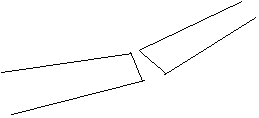
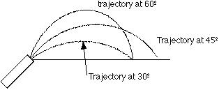

gravity: This is the term used either for the force exerted by gravity or the acceleration caused by the force of gravity. At the surface of the earth, it has a value of approximately 9.8 meters per second per second, or 32 feet per second per second, depending on the measuring system you choose to use. It also has a value of 9.8 newtons per kilogram or 32 pounds per slug, depending upon which measuring system you choose to use. This latter amount is the force that gravity will exert on a given mass. Either way, the force causes the acc eleration and the number value of the total force per unit mass on the object and the acceleration it causes are identical.
howitzer and tunnel: In the context of this demonstration, the howitzer refers to a device that will fire a softball into the air. The tunnel refers to a piece of cardboard draped over a frame that forms a tunnel through which a demonstrator will coast along with the howitzer while on a three-wheel cart.
projectile: Any object which is given some velocity and then left to fly through the gravitational field with only the gravitational forc acting on it. An example is a baseball hit by a bat, a basketball shot toward a basket, a bullet fired from a gun, etc.
range: The horizontal distance a projectile is fired. How far it moves away from whatever gave it its horizontal motion. We will be firing a projectile at an angle with the horizontal, it will arc upward and outward. How far outward it goes is the range of the projectile.
simultaneous: Two objects will be released at the same time. We call it simultaneous fall. This means the two objects will begin falling at the same time.
trajectory: This refers to the path the projectile follows when fired from a gun, or a bat, or someone throwing the object, or whatever its source of motion is. In our demonstrations, projectiles will follow curved paths that will be interesting to observe.
<& /mason/feature.comp, filename=>'Mechproj1.gif', text=>'The demonstrator will take two balls, a medicine ball and a soft ball and drop them simultaneously from the same height above the floor. The two will hit the floor at the same time. Then one of the two balls will be dropped vertically at the same height as the other one which will be tossed horizontally. The question is "Which one will land first, the one that travels the least far, or the one that travels farther and faster?" It will be difficult to tell which lands first because there is too much error in the dropping and the throwing horizontally and such. It will appear one lands before the other as a rule.' &>
HOW IT HAPPENS
Gravity is the force that pulls both balls toward the floor. It pulls harder on the heavier ball, but the heavier ball also has a greater resistance to being speeded up toward the floor. The two effects cancel each other out, and the two objects will hit the floor at the same time, given that they are dropped from the same height and at the same time. There will be another demonstration following this which will be set up to eliminate the differences in when the balls are dropped, and the difference from the horizontal that the ball is projected.
<& /mason/feature.comp, filename=>'Mechproj2.gif', text=>'The demonstrator will be at the top of a 20-foot tower. He will have two bocce balls on a device that will fire one horizontally and the other will drop vertically at exactly the same time. A question will be asked as to which will hit the ground first. The audience will be asked to listen carefully for the sound of the bocce balls when they hit the floor. The object is to see whether they hit at the same time or not. Will there be one sound as they both hit the floor, or will there be two, one for each as they hit at different times?' &>
HOW IT HAPPENS
When the two are released, the fact that one ball is being propelled forward has nothing to do with the fact that it is being accelerated downward. The two directions are perpendicular to each other, and hence have no effect on each other. The two balls will hit the floor at exactly the same time.
<& /mason/feature.comp, filename=>'Mechproj3.gif', text=>'The demonstrator will have an apparatus that looks like the diagram below. In the demonstrations before this, it was established that all objects fall at the same rate of acceleration and hit the floor at the same time, given the same release instant. In this demonstration, a bowling ball will fall at a slower rate than a bucket attached to an aluminum "arm." When the demonstrator removes the supporting rod, the “arm” will fall to the floor, with the bowling ball having dropped into the bucket, thus assuring the viewer that the bowling ball fell at a slower rate than the bucket attached to the "arm." It is important to note that there is a weight attached to the "arm" close to the base of the arm. ' &>
HOW IT HAPPENS
The weight on the “arm” causes the center of mass of the arm to be shifted toward the lower end of the “arm” . Thus, when the supporting rod is removed, the center of mass of the arm accelerates toward the earth at the normal rate. This causes the part of the arm where the bucket is placed to fall faster than the normal acceleration of gravity and it also falls in an arc, allowing it to get out and under the bowling ball so it catches the bowling ball.
There is a very famous picture of a smokestack being demolished. This smokestack is toppled to the right, and the smokestack is broken in two before it hits the ground. It looks like the following: 
This is a result of the center of mass falling quicker than the upper end of the smokestack. This entire demonstration does not violate the law of gravity, it just seems like it does!
<& /mason/feature.comp, filename=>'Mechproj5.gif', text=>'In this demonstration, a projectile will be fired 4 times with exactly the same speed. First, the projectile will be fired perpendicular to the horizon. This shows that the distance forward the projectile goes (its range) is zero. It falls right back on the place from which it was fired. Next, the projectile is fired at 45 degrees with the horizontal. Next it is fired at 30 degrees with the horizontal, and finally it is fired at 60 degrees with the horizontal. The first firing gives us the least range, the second gives us the most range, and the last two are identical at between the least and the most range. ' &>

In the previous demonstration, the idea was brought up that in order for the projectile to have a range other than zero, it would need to be fired at an angle with the vertical. In this demonstration, the demonstrator will ride in a three-wheel cart and will fire a projectile (softball) vertically into the air as he is moving forward. He will go through a tunnel, firing the projectile as he enters the tunnel, proceed through the tunnel and catch the projectile on the other side of the tunnel. The projectile will have passed over the top of the tunnel while the demonstrator and the cannon will have passed through the tunnel.
HOW IT HAPPENS
The motion of a projectile can be thought of as motion in two separate, perpendicular directions. One direction is horizontal, the other is vertical. When a projectile is fired at an angle between these two directions, it is given motion in both directions, causing the curved trajectory. The demonstrator will give the projectile motion in the vertical direction with the cannon pointed directly upward. He will give it horizontal motion by moving forward at the same time he fires it. The motion upward does not change the motion horizontally, so the projectile and the cart move along together horizontally. Thus the demonstrator will be able to catch the ball on the other side of the tunnel.
This is the classic demonstration designed to answer and age-old question. If a hunter is out in the jungle and wants to fire a tranquilizing dart to put a monkey to sleep, how does he aim at the monkey in order to hit with the dart? You see, the monkey is very smart, and as the puff of smoke from the dart gun shows up, the monkey knows to instantly drop from the tree to avoid the dart. The demonstration team sets up just such a situation, with a demonstrator being the “monkey” hanging from a tower with an electromagnet, and a billiard ball will be fired at him while he hangs there. At the instant the billiard ball is fired the demonstrator will be dropped from the tower by cutting the electricity to the electromagnet. He will fall to a large sponge pad on the floor, catching the billiarad ball in mid-air with a baseball glove.
HOW IT HAPPENS
When a projectile is fired from the barrel of a gun, its path is formed by the action of gravity together with its given velocity. If gravity were to stop acting, the desired direction of the projectile would be directly at the target. The projectile would follow a straight line directly from the muzzle of the gun to the target. When gravity is acting, it will tend to do the same thing to both objects, both the falling target and the projectile. Quite simply what this means is that the projectile must be aimed directly at the target in this situation also. The fact is that a target which drops the instant the projectile is fired from a long distance is easier to hit than one that is stationary! If the projectile is fired with a greater velocity, the target just doesn’t fall as far until it is hit by the projectile. In this case the projectile will follow a straighter path to the target. If the projectile is fired slower, it will follow a more curved path and hit the target farther down towards the ground. But as long as the gun is aimed directly at the target, the projectile will hit the target as it falls, provided the projectile has enough velocity to get to the target before it hits the ground.
<Back to:Physics Circus